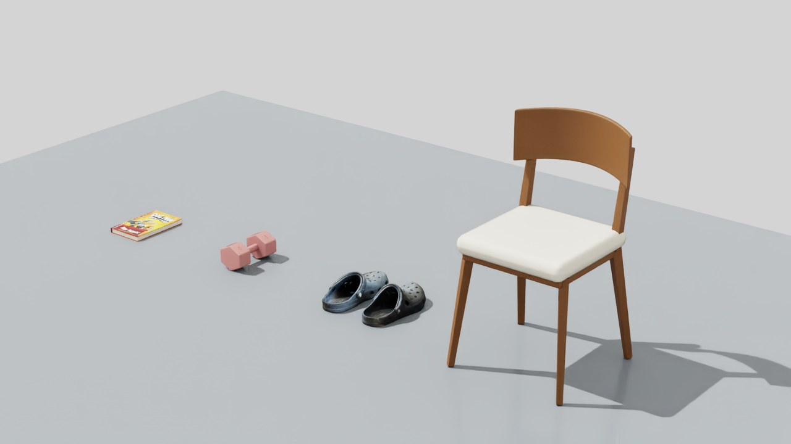
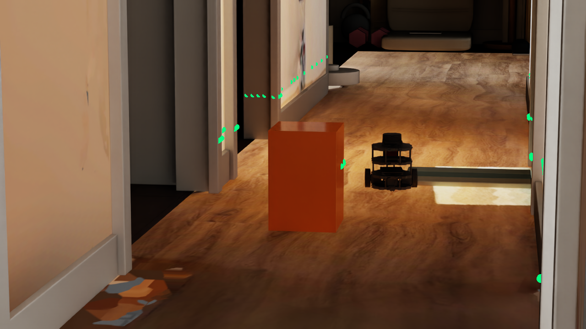
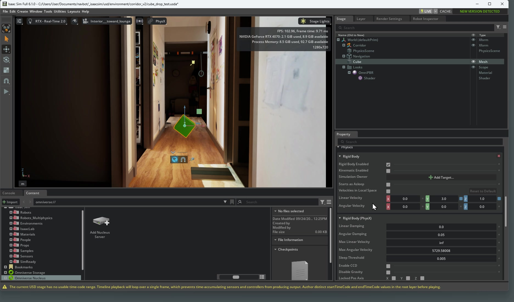

01
ROBOT LEARNING
NavBot
Gazebo、ROS、PPO、行为克隆、残差控制与泛化测试。
GazeboROSPPO
LEARNING IN PUBLIC · 2026
这里记录我从 Gazebo 导航实验出发，沿着 AI Agent、Blender、OpenUSD、Omniverse 与机器人学习一路探索的过程。
00 / MANIFESTO
我不是在收集软件名称。
我想理解一台机器人如何感知、学习、失败与成长；一个数字世界如何被创建、组合和随机化；以及 AI Agent 如何把现实数据转化成可用于训练的仿真资产。
01 / UNIVERSE MAP
每个节点都是一段学习记录，也是一块未来系统的拼图。
ROBOT LEARNING
Gazebo、ROS、PPO、行为克隆、残差控制与泛化测试。
WORLD BUILDING
让 AI Agent 通过 Blender 与 Houdini 生成、整理和验证数字环境。
SCENE INFRASTRUCTURE
从 Stage、Prim 和 Layer，到 Composition、Variant 与认证考试。
SIMULATION STACK
Isaac Sim、Isaac Lab、Newton、MuJoCo 与多仿真器工作流。
THE LONG ARC
用 domain randomization、传感器模拟和真实数据缩短数字世界与现实机器人的距离。
02 / FIELD NOTES

CASE STUDY 001 · ACTIVE
NavBot 最初只是一个 TurtleBot3 导航实验。机器人能够朝目标前进，却会撞上挡在正中的柱子。这个明确的失败案例，推动了 residual PPO、control gate、reward shaping、behavior cloning 与泛化测试。
后来我意识到：策略学习之外，可信、可变、可复现的环境本身也是瓶颈。于是 SimForge Agent 出现了。
03 / DEVLOG





机器人导入、差速前进与转弯，再进入 Blender 走廊验证落地和侧墙阻挡。附 20 秒仿真视频、测量结果，以及 Play 崩溃和计时修正的排查记录。
阅读实验日志 →

对比 Scaniverse Gaussian Splatting、LiDAR mesh 和模块化 Blender 重建，并记录从采集、平面拟合、纹理恢复到 Sim-ready 判断的完整方法。
阅读实验日志 →
最小的连接测试：自然语言指令能否可靠地创造物体、材质、灯光和相机？
文章整理中Visual mesh 与 collision geometry 的区别，以及一个“缺失”模型如何仍能参与物理仿真。
文章整理中一次动画渲染如何带我们看清 Blender、FFmpeg、文件缓存与恢复风险。
文章整理中04 / THE ROAD TO USD
在 Discord 分享通过 NVIDIA OpenUSD Development 认证的消息后，有朋友来问学习方法。这里整理了我分享给他们的两个主要入口，以及用 AI 辅助练习的建议。
从 VFX 中的 USD 经验，继续走向机器人与数字场景。
MY SHARED RESOURCES
官方模块 + 视频讲解 + 主动练习。
01 / NVIDIA · OFFICIAL LEARNING PATH
打开官网的 Certification Learning Path，逐个查看学习模块。内容从 Stage、Prim 等基础概念，延伸到组合、资产组织、数据交换和实例化。Exam Blueprint 可用来核对复习范围。
打开 NVIDIA 官方认证与学习路径 ↗ 从第一个基础模块开始 ↗02 / YOUTUBE · NVIDIA OMNIVERSE
我分享的 Community Office Hours 播放列表。配合官方模块观看，重点理解组合机制、内容聚合，以及场景渲染与可视化等主题；遇到没理解的部分，可以暂停并回到文档对照。
观看完整认证系列播放列表 ↗03 / PRACTICE WITH AN AI AGENT
我还建议让 AI Agent 生成模拟题辅助练习。下面是一段可直接使用的练习提示词：
请根据我提供的 NVIDIA OpenUSD 官方学习模块，生成 10 道原创练习题，混合概念判断、场景分析和代码阅读。每次只出一题，先等我回答，再解释正确答案与其他选项的问题，并给出可核对的官方资料链接。最后总结我的薄弱知识点。
AI 练习不是官方模拟考试或真实题库，答案需要对照文档或小实验验证。这些链接和方法是个人学习分享，不代表通过保证；课程和考试信息以 NVIDIA 官网为准。
认证之后的实践：扫描资产 → Blender → USD → Isaac Sim。这些项目记录属于后续应用，可以继续看 USD 如何组织真实场景。
NOW / NEXT TRANSMISSION
这个网站会随着实验一起生长。没有“完成”的那一天，只有不断被点亮的新节点。